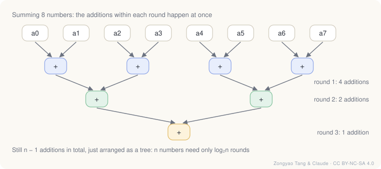

The earlier examples were all "each output depends on a few inputs", naturally parallel. This unit looks at two computations that seem to have to be serial: combining a pile of numbers into one (reduction), and every position depending on all the numbers before it (prefix sum). The thread: a reduction can be run in parallel like a knockout tournament → how to arrange the threads so nothing is wasted → what changing the order of computation brings → what to do about the harder prefix sum → parallel algorithms have two bills to add up → why all this matters for Transformers.
Part 3 · The GPU and the CUDA execution model3.5 Parallel patterns: reduction and scan
Translated by AI (Anthropic's Claude) from the Chinese edition. The Chinese original is the reference.
This unit answersSums and prefix sums seem to require going one after another. How are they parallelised?
Follows 3.4: uses branch divergence and coalescing to look at the two most used parallel patterns; softmax, LayerNorm and Flash Attention all build on them.
- A reduction is a knockout tournament: n numbers, a result in log n rounds
- Keep the threads still at work next to each other
- Floating-point addition is not associative: a parallel sum may differ slightly each time
- A prefix sum looks serial, but can be done by "computing each segment on its own, then adding the totals before it"
- A parallel algorithm has two bills: the number of steps and the total work
- Reductions are hidden inside softmax and LayerNorm
Explanation
1A reduction is a knockout tournament: n numbers, a result in log n rounds
A reduction such as a sum or a maximum takes n−1 steps serially. In parallel, pair them off and eliminate half each round, and the result arrives in log₂n rounds, with the total still n−1 operations. The condition is that the operation is associative, so the order of computation can be rearranged freely.
A reduction combines a set of numbers into one result with some operation: sum, maximum and minimum are all reductions. The serial way adds them one after another:
((((a0 + a1) + a2) + a3) + ...; n numbers take n−1 steps, and each step depends on the result of the one before, so it looks impossible to parallelise.The key observation: for addition, which two you add first does not change the result. So the brackets can be placed differently:
8 numbers: a0 a1 a2 a3 a4 a5 a6 a7 Round 1: (a0+a1) (a2+a3) (a4+a5) (a6+a7) 4 additions, at the same time Round 2: (…+…) (…+…) 2 additions, at the same time Round 3: (…+…) 1 addition
The additions within each round do not depend on each other and can be done at the same time; each round halves the count of numbers, so n numbers take log₂n rounds. A million numbers take a million steps serially and only 20 rounds in parallel. The total number of additions has not changed, still n−1, only arranged as a tree.

Re-bracket the running sum and it becomes a tree Re-bracketing like this requires the operation to be associative: (a+b)+c = a+(b+c). Addition, multiplication, maximum and minimum are; subtraction and division are not, and cannot be done this way directly.
An analogyLike a World Cup knockout stage: 32 teams need not play a round robin; 5 rounds decide the champion. PMPP uses exactly the World Cup schedule as its example when explaining reduction.
So a parallel reduction on the GPU is shaped like a tree; later rounds have fewer and fewer active threads, and how you arrange which threads keep working decides the efficiency (next card).
Used later in Keep the threads still at work next to each otherFloating-point addition is not associative: a parallel sum may differ slightly each timeA prefix sum looks serial, but can be done by "computing each segment on its own, then adding the totals before it"Reductions are hidden inside softmax and LayerNormSourcesPMPP §10.2PMPP §10.2: the World Cup example- In each round of the tournament, half the "players" leave. On a GPU, the ones leaving are threads. Who leaves and who stays matters a lot for performance.
2Keep the threads still at work next to each other
The naive tree reduction keeps threads 0, 2, 4… working, so the active threads are scattered across every warp and almost every warp diverges. Keep the first half of the threads working instead, and the active threads gather in a few warps while the other warps drop out entirely.
The most direct implementation: in round 1, the even-numbered threads add their right-hand neighbour's value to their own; in round 2, threads whose number is a multiple of 4 continue; in round 3, multiples of 8…
See what this means for warps. In round 1, each warp has 16 threads working and 16 idle; in round 2, 8 working and 24 idle. The active threads are spread evenly over all warps, so every warp diverges, and every warp occupies the hardware while only a few of its threads do anything.
Arrange it differently: in round 1, the first half of the threads (0 to n/2−1) each add the value at the corresponding position in the second half; in round 2 the first quarter continues… The active threads are always the lowest-numbered stretch, contiguous.
Now a warp either has all 32 threads working or has dropped out entirely (and the hardware can skip it). Divergence appears only in the last few rounds, when fewer than 32 threads are active. At the same time, the active threads access contiguous addresses, so memory accesses coalesce automatically.
The two versions do exactly the same additions; only the mapping of "which thread handles which pair" changes. This is the previous unit's point in action: reducing divergence usually means rearranging the data, not changing the algorithm.
An analogyLate in a knockout tournament, rather than leaving the remaining teams spread over all the pitches, gather them on a few and close the rest.
So the same algorithm, with only the indexing rule for "who keeps working" changed, has far less branch divergence; after that, shared memory and thread coarsening optimise it further.
Builds on A reduction is a knockout tournament: n numbers, a result in log n roundsBranch divergence: a warp taking two paths has to run twiceSourcesPMPP §10.4- Earlier we said addition is associative, so the order of adding can be changed freely. For integers this holds exactly; for floating-point numbers only approximately.
3Floating-point addition is not associative: a parallel sum may differ slightly each time
Mathematically (a+b)+c = a+(b+c), but floating-point numbers are rounded after every addition, so a different order can give a result that differs in the last few digits. A parallel reduction changes the order of addition; with atomic operations, the order also depends on which thread gets there first, and may differ on every run.
Floating-point numbers have a limited number of significant digits (float, about 7 decimal digits). Every addition rounds the result to that precision, and rounding throws away a little information.
For example, suppose only 3 significant digits can be kept, and we compute 100 + 0.4 + 0.4:
- Left to right: 100 + 0.4 = 100.4, rounded to 100; add 0.4 again, still 100. The result is 100.
- Small numbers first: 0.4 + 0.4 = 0.8; 100 + 0.8 = 100.8, rounded to 101. The result is 101.
A different order, a different result. Real floating-point numbers have much more precision and the difference shows in the last digit or two, but the principle is the same.
A serial sum is one order, a tree reduction another, so their results differ slightly. This is not a bug; both results are "correct to within rounding error".
Further, some parallel implementations have no fixed order at all. When many threads add into the same variable with atomic operations, who adds first depends on run-time scheduling, which may differ on every run, so the result differs slightly every time. This is one of the main reasons training on GPUs cannot be reproduced bit for bit.
The practical consequence: when checking a kernel you wrote, compare with an error tolerance (say a relative error below 10⁻⁵); you cannot require exact equality with the reference result (see 4.1).
An analogyLike doing accounts on a calculator that shows only three significant digits: adding the small change together first and then the large sum gives a different result from adding the large sum first and then each bit of change.
So when the same training runs twice on a GPU, losses that differ a few places after the decimal point are normal; when exact reproducibility is needed, use a deterministic order of reduction (PyTorch's deterministic option), usually at the cost of speed.
Used later in Write a correct one first, then a fast oneSourcesPMPP §10.2- A reduction combines a set of numbers into one result. There is a harder kind of computation: one result for every position, each depending on all the numbers before it.
4A prefix sum looks serial, but can be done by "computing each segment on its own, then adding the totals before it"
In a prefix sum (scan), the result at each position depends on all the elements before it, so it looks as if it can only be computed in order. The layered way: each block first computes the prefix sum of its own segment, then a prefix sum is taken over the segments' totals, and finally "the total of all earlier segments" is added back to each segment.
The definition of a prefix sum (scan): input
[3, 1, 7, 0, 4, 1, 6, 3], output[3, 4, 11, 11, 15, 16, 22, 25]; output i is the sum of the first i numbers. The serial algorithm is one line,out[i] = out[i-1] + in[i]; every step uses the result of the previous one, a long chain of dependencies.The way to break the chain is segments. Divide the 8 numbers above into two segments,
[3, 1, 7, 0]and[4, 1, 6, 3]:- Step one: compute each segment's prefix sum independently, getting
[3, 4, 11, 11]and[4, 5, 11, 14]. The two segments do not depend on each other and can be computed at the same time. - Step two: the second segment's results still lack "the total of the first segment". The first segment's total is 11; add 11 to each number of the second segment, getting
[15, 16, 22, 25]. In this step, too, the positions do not depend on each other and can be computed at the same time.
With many segments, "the total of all segments before each one" is itself a prefix sum (over the segments' totals), and can be computed by another layer of the same method. On the GPU, a segment is the data one block handles.
Prefix sums are far more useful than they look. For instance, to pick out of a million elements those that satisfy a condition and pack them tightly together: mark each element 1 or 0, take the prefix sum of the marks, and the result is exactly each selected element's position in the output. Sorting, sparse matrices and memory allocation all rely on it.
An analogyLike several checkouts each totting up their own takings at once; in the end, knowing how much each checkout ahead took is enough to work out the running total of every sale in the shop.
So computations that "depend on all earlier results" can be parallelised too, at the cost of a few more rounds. The idea recurs on GPUs: parallel radix sort and stream compaction are both built on scan.
SourcesPMPP §11.6- Step one: compute each segment's prefix sum independently, getting
- How is the prefix sum within a segment parallelised? There is more than one algorithm, differing in speed and in how much they "waste". This leads to two measures for judging parallel algorithms.
5A parallel algorithm has two bills: the number of steps and the total work
Kogge-Stone scan takes few steps (log n), but about n log n additions in total; Brent-Kung takes about twice as many steps, but only O(n) total work, the same order as the serial algorithm.
Judge a parallel algorithm by two numbers:
- Steps: with unlimited processors, how many rounds it takes. This decides how fast it can be in the ideal case.
- Total work: over all rounds, how many operations are done in total. This decides how much compute it consumes.
The Kogge-Stone algorithm: in each round, every position adds in the value from the position "1, 2, 4, 8… places away". After log₂n rounds everything is done, the fewest steps. But in each round almost every position does an addition, so the total work is about n·log₂n. At n = 1024, about ten thousand additions, where the serial algorithm needs only 1023.
The Brent-Kung algorithm: first compute a tree from the bottom up, like a reduction (n−1 additions), then hand the results back down from the top. About 2·log₂n steps, twice as many; but total work of only about 2n, the same order as the serial algorithm. Such algorithms are called work-efficient.
Which to choose? With little data and lots of idle arithmetic units on the GPU, the extra work costs no time and Kogge-Stone, with fewer steps, is faster. With a lot of data and the GPU already fully loaded, the extra tenfold work really does have to queue for execution, and Brent-Kung is better.
This also echoes the thread coarsening of 3.4: parallelism is not free; with limited resources, "doing less useless work" matters as much as "taking fewer steps".
An analogyWith plenty of hands, "everyone does a bit more and we finish early"; with few hands, the extra work just queues and things get slower.
So with little data and idle capacity on the GPU, the algorithm with fewer steps is faster; with far more data than threads and the hardware already fully loaded, the algorithm with less work (work-efficient) is better.
SourcesPMPP §11.3PMPP §11.4- Finally, connect this unit to the main line of the course: what do these parallel patterns have to do with Transformers?
6Reductions are hidden inside softmax and LayerNorm
softmax first finds a row's maximum (for numerical stability), then the sum of exponentials: two reductions; LayerNorm finds a mean and a variance: also reductions. Many operators in a Transformer that look "element-wise" are really bottlenecked by reductions within a row and by reading GPU memory again and again.
Look at how softmax is computed. For a row of numbers x:
- First find the row's maximum m (a reduction). Subtracting the maximum is for numerical stability, so the exponentials do not overflow.
- Compute exp(x − m) for each element (element-wise).
- Add these exponentials up to get s (another reduction).
- Divide each element by s (element-wise).
Two reductions and two element-wise operations; a naive implementation reads the row from GPU memory four times. LayerNorm is similar: the mean is one reduction, the variance another, then the element-wise normalisation.
These operators do very little arithmetic, have very low arithmetic intensity, and are typically bandwidth-bound (3.3). So the key to optimising them is not doing the additions faster but passing over the data fewer times: can the maximum and the sum of exponentials be found in one pass?
They can. Keep "the maximum so far" and "the sum of exponentials so far" while reading, and correct the earlier sum whenever a larger value appears. This is called online softmax. It means softmax no longer needs to see a whole row first, so attention can be computed in blocks without writing intermediate results back to GPU memory. This is the heart of Flash Attention (4.4).
An analogyLike scaling a whole class's marks "relative to the top mark": it looks like computing one number for each student, but first you have to leaf through every paper to find the top mark, then leaf through again to get the total. The time goes into those two passes through the papers, not the final division.
So writing reductions well is the foundation for writing Transformer operators well; merging several reductions into one pass (online softmax) is exactly the key step of Flash Attention (4.4).
Used later in Online softmax: correct without seeing the whole row
Putting it together
Because addition is associative, a sum can be paired off two by two and finished in log n rounds; but floating-point addition is not strictly associative, so results differ slightly; a prefix sum can also be parallelised by "computing each segment on its own, then adding the totals of the segments before"; judge a parallel algorithm by both its number of steps and its total work. The core of softmax and LayerNorm is reduction, the stepping stone to Flash Attention.
Test yourself
Without looking back at the explanation, say it in your own words.
- Why does a parallel reduction take only log n rounds? What does it require of the operation?
- In a tree reduction, why is keeping "the first half of the threads" working better than keeping "the even-numbered threads" working?
- Why can a parallel sum differ slightly from a serial sum?
- Each position of a prefix sum depends on all the elements before it; why can it still be parallelised?
- What characterises each of the two scan algorithms, Kogge-Stone and Brent-Kung? When should each be chosen?
- What reductions are inside softmax and LayerNorm? What does this mean for optimising them?